For the guests
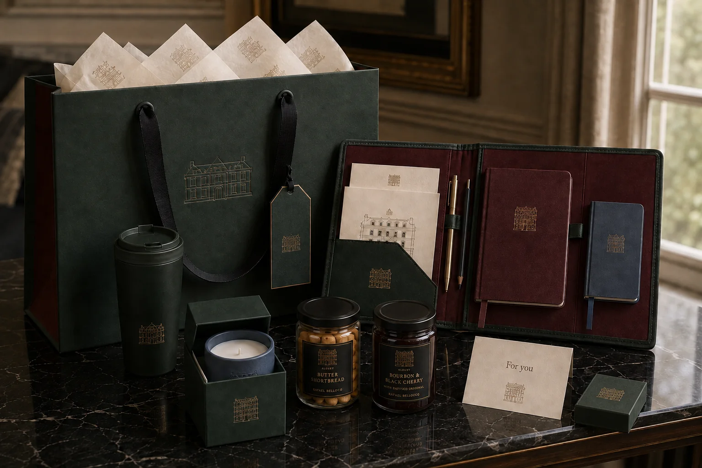
Prepared for the 25-person party, with fresh gift stock and individually packed food. The bag and everything inside are the guest’s to keep.
Welcome to Albury
An overnight welcome, personal provisions and useful gifts. The arrival basket stays with the room; food, drinks and the stationery pack are for the guest. A separately prepared take-home hamper includes its own gifted basket.
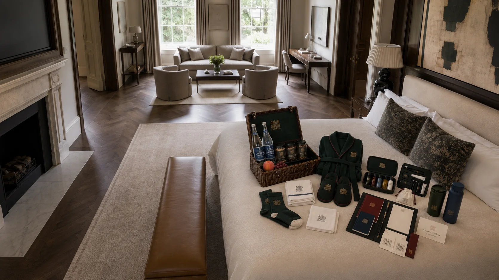

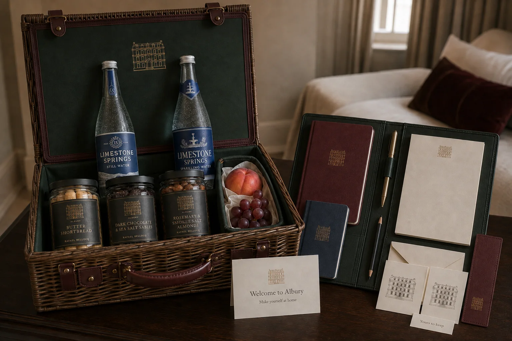
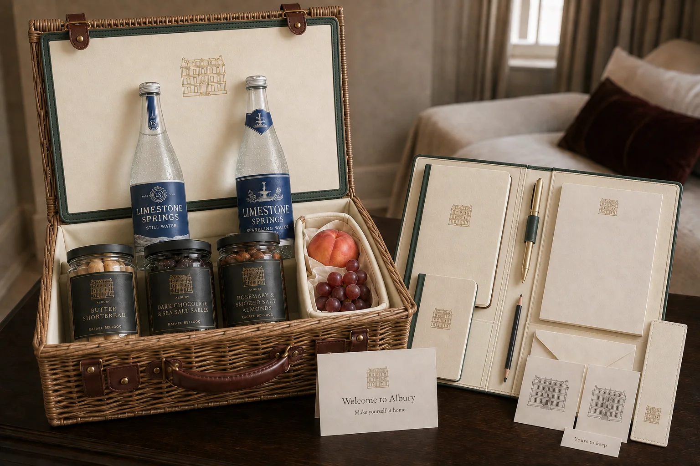
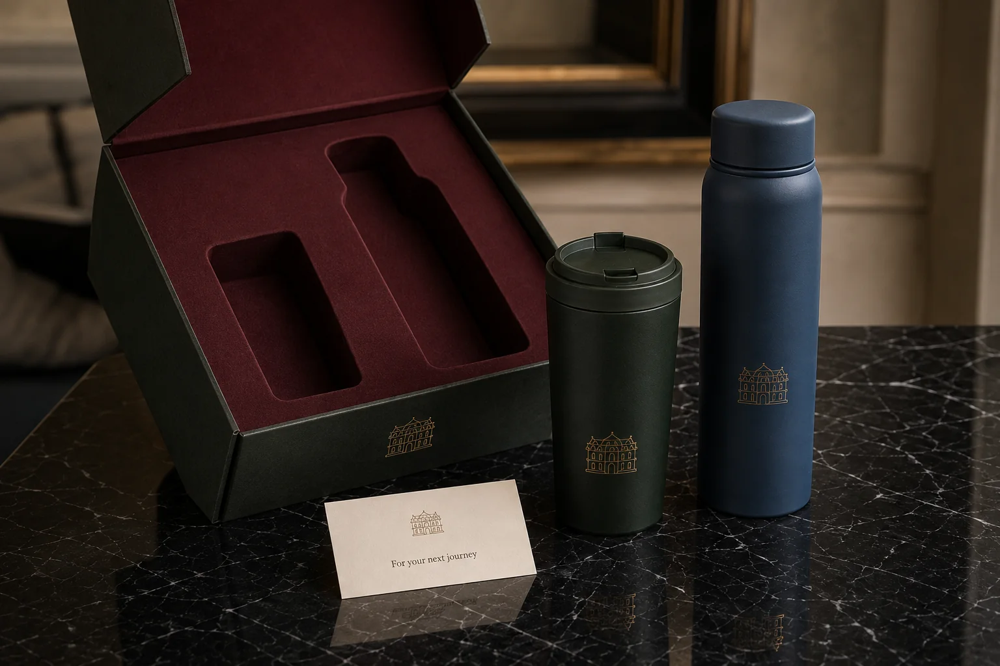
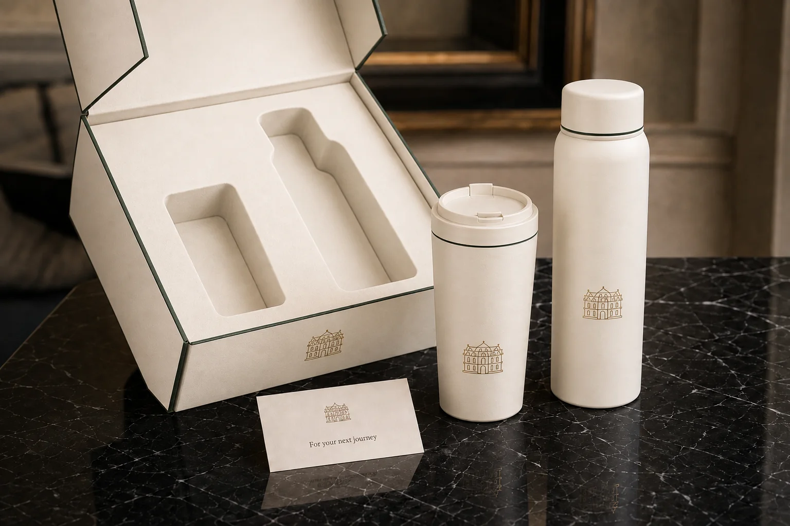
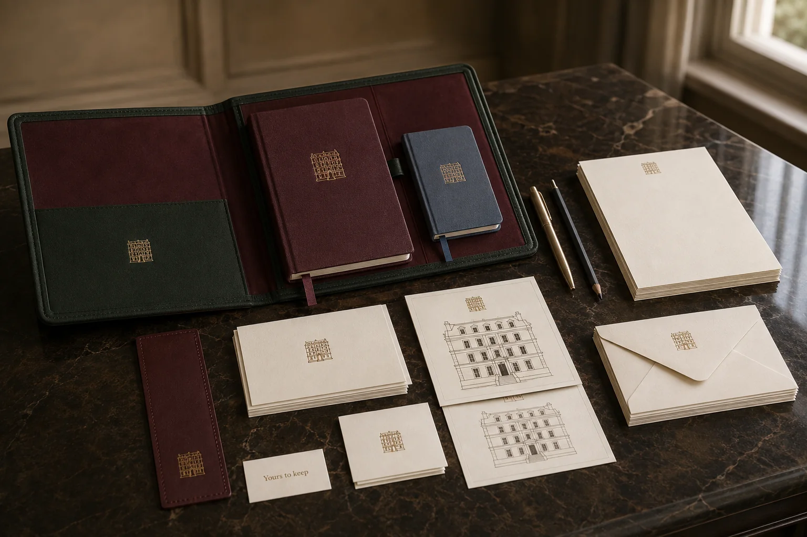
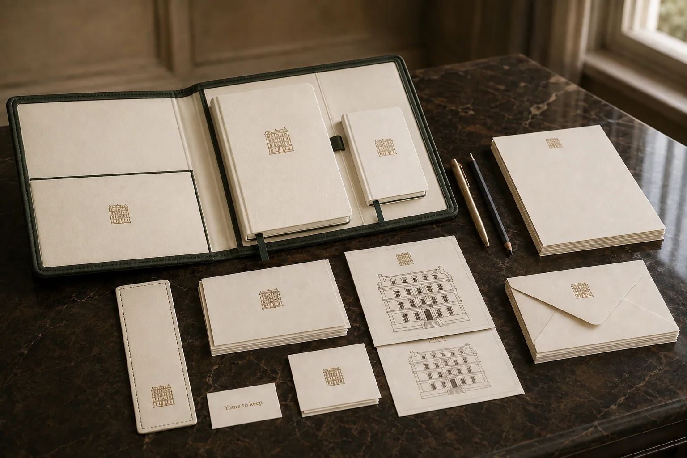
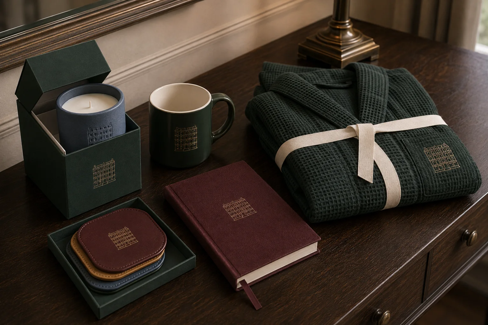
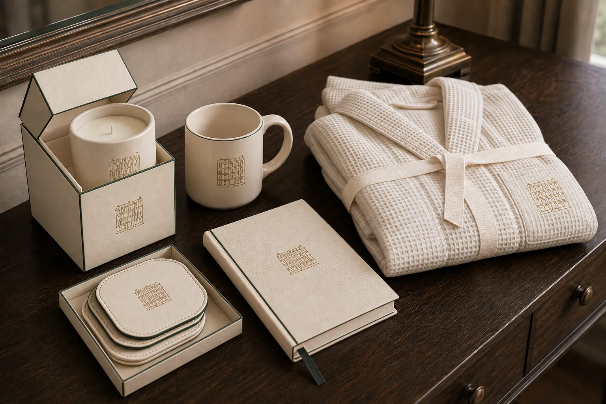
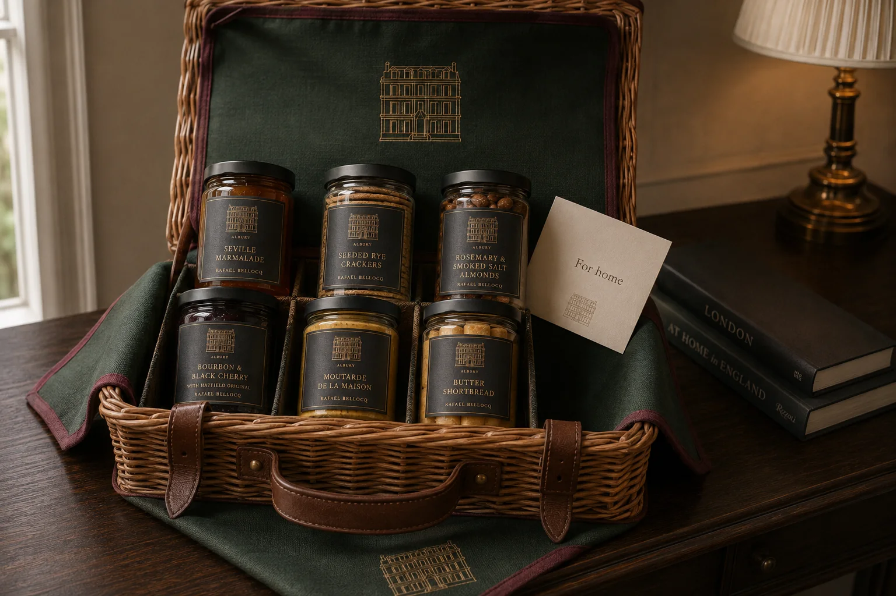
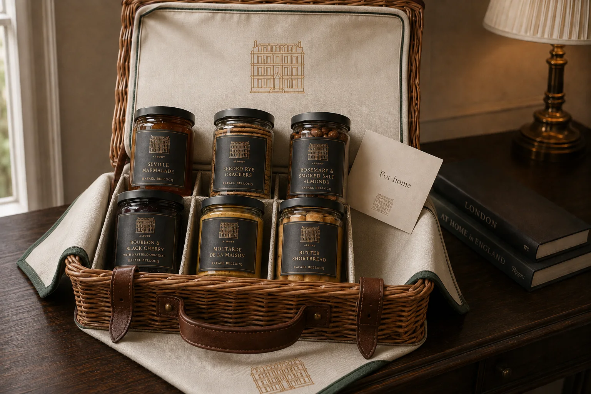
What guests keep & how the welcome works
Authority And Opening Baseline
This file owns the use and ownership of Albury's marked household goods, overnight welcome provision, stationery packs and selected guest gifts at the 11 August 2025 opening. It supersedes fixed departure tiers and older image captions that imply every dinner guest receives an identical bag. ALBURY_CULINARY_PROGRAMME.md owns recipes, food handling and commercial status; ALBURY_MENUS_AND_COMMON_FOODS.md owns menus; PROPERTY_ALBURY_STAFFING.md owns staff and reporting.
Albury is Alex's home, built to welcome friends and entertain. The house mark identifies household equipment as well as personal gifts; it does not mean everything in a room is a souvenir. Provision is generous, discreet and adapted to the guest. These are opening capabilities and ordinary service arrangements, not new booked visits, an account of gifts already accepted, or a retail launch. The existing five weekend visitors remain the established opening visitor group.
What Guests Keep
| Provision | Ownership and use |
|---|---|
| Slippers and house socks | The guest's own issued pair, theirs to take |
| Personal stationery | Issued pocket notebook and pen, writing paper, envelopes, cards and postcards are theirs |
| Complete guest stationery pack | Gift folio and all its contents belong to the recipient; see the specification below |
| Playing cards and matches | Guest-issued packs are theirs; communal games and house service stock remain |
| 30 ml bathroom bottle family and pouch | Personal onward-travel provision, theirs to take |
| Fitted grooming kit | Personal case, toothbrush, comb, razor, nail file and supplied practical consumables are theirs |
| Individual bath soap | The guest's own soap may be packed; reserve bathroom stock remains |
| Selected food and drinks | Guest-portioned biscuits, snacks, preserves and drinks are for their use or to take, with suitable packing and handling |
| Gift packaging | A supplied departure carrier, food-gift basket, gift box, tissue and tag belong to the recipient |
The established five bathroom formulations and some illustrated grooming consumables are not individually named in current text. This hospitality change does not invent their recipes, contents or manufacturers.
What Stays With The House
| Household property | Includes |
|---|---|
| Linen and robes | Working bath towels, hand towels, flannels and room dressing gowns |
| Bathroom equipment | Full-size refillable vessels, soap dishes, tumblers, storage jars, vanity/jewellery trays, tissue covers, waste bins, brush holders and laundry baskets |
| Room fittings | In-use candle and vessel, room correspondence folder, information card and reusable arrival basket |
| Table and guest-pantry equipment | Caddies, cups, mugs, bowls, plates, serving dishes, trays, linen, tea and coffee service, glassware and bar tools |
| Kitchen stock | Working containers, bulk jars, service bottles and freezer tubs; a guest gift is packed separately |
| Outing equipment | Loaned cups, reusable bottles, flasks, lunch containers, cutlery cases and insulated carriers |
| Picnic service | Existing fitted hamper, blanket, tableware, cutlery rolls, napkins and cooler for four |
| Study equipment | Alex's working notebooks and correspondence, desk mat, trays, pen pot, cases, cable wraps, media storage and headphone stand |
A guest can receive a fresh example of an otherwise household object as a gift. Staff make that clear naturally and use gift stock; they do not strip used room equipment into a departure bag or turn a casual visit into an inventory explanation.
Gifts Available By Selection
The house holds fresh gift stock of the marked travel coffee cup, reusable water bottle, ceramic mug, boxed house-scent candle, coaster set, larger notebook/stationery set and waffle dressing gown. Cup and bottle may be offered individually or together in a fitted presentation box. A fresh flannel can accompany a bath gift; the flannel in the older departure photograph is a gift example, not permission to remove working linen.
These are thoughtful choices, not a compulsory bundle for every visitor. A friend who admires the mug may be given a new one; someone heading to the airport may appreciate a travel cup or bottle; a regular guest may keep a robe at Albury or take a fresh gifted one. A return visit need not produce a second folio, bottle or robe. Staff know the context or ask one ordinary question.
Proper Guest Stationery Pack
The take-home pack is a compact bookcloth presentation folio containing:
- One A5 clothbound notebook and one pocket notebook.
- One metal pen and one graphite pencil.
- Ten sheets of ivory writing paper and ten matching envelopes.
- Four correspondence cards and two Albury street-elevation postcards.
- One slim leather bookmark.
The folio, notebook covers and custom paper goods carry the architectural house mark. The whole pack is the guest's. It is distinct from the permanent leather correspondence folder in the bedroom. A small 'Yours to keep' card can make ownership clear. Wi-Fi, contact extensions and service information are supplied separately on the room-information card; no invented password, phone number or service timetable is fixed here.
Overnight Arrival Hamper
Before an overnight arrival, a reusable lidded wicker basket is placed on the guest-room console. It has a washable Albury-marked linen lining and a restrained leather handle/strap treatment. It is a room welcome basket, distinct from the picnic hamper and from a gifted food basket.
The standard summer opening arrangement provides:
- One 500 ml Limestone Springs Still Water and one 500 ml Limestone Springs Sparkling Water, in their own blue-labelled glass bottles with silver screw caps.
- One small labelled jar of Bethan's butter shortbread, P21.
- One small labelled jar of dark-chocolate and sea-salt sablés, P22.
- One small savoury snack jar, normally rosemary and smoked-salt almonds, P23; adjusted for dietary needs or preferences.
- A small seasonal fruit selection, illustrated with a peach and grapes.
- A personal welcome note and the complete guest stationery pack, tucked alongside the basket when that keeps food and paper comfortably separated.
The food, waters and stationery are for the guest; the basket remains with the room. A couple shares one sensibly sized basket with sufficient food and drink; personal stationery and travel items follow the actual guests. Replenishment follows use, not a daily ceremonial replacement of the entire hamper. Returning friends receive familiar favourites and fresh consumables without automatic duplicate keepsakes.
Robes, slippers, bathroom supplies and bedside water are already in their normal places. A chosen travel cup or reusable bottle is an additional personal gift, not compulsory in every arrival basket. House cordial and any other preparation requiring chilling wait in the guest refrigerator or are served chilled; the welcome note can mention them. Cream Soda or another known favourite may be provided alongside the standard waters. No wine or alcohol is assumed for every guest.
Take-Home Food Hamper
A separate food gift is assembled for the guest and journey, using a marked gift basket or suitable carrier. This basket and the packed contents belong to the recipient; it is not the room basket removed from stock.
The illustrated six-item example contains Seville marmalade (P01), bourbon and black cherry confiture (P05, with Hatfield Original credited), house mustard (P09), seeded rye crackers (P19), butter shortbread (P21), and rosemary/smoked-salt almonds (P23). It is an example of the available repertoire, not a mandatory six-product formula. Ketchup, other preserves, biscuits, snacks or cordial can be chosen. Chilled goods need a suitable journey and cold provision; nothing becomes shelf-stable because it is wrapped as a gift. Individual gifts use appropriate contents, batch/date, storage and allergen information.
Dinner guests may leave with a small food gift, a useful house object or nothing formal. The old 'Tier Two' photograph remains an optional assortment of available items; the mandatory fixed ten-item departure rule is retired. Staying guests can have their personal provisions and remaining treats packed for them. No guest must perform gratitude or attend a gift presentation for the scene to move on.
Operation And Visual Identity
Ottilie oversees the welcome standard. Housekeeping prepares the room and basket; Crispin and the service team coordinate guest preferences, drinks and departure packing; Rafael and Bethan supply the food. Existing staff and stores handle this work; no new posts or employment arrangements are created. Gifts are household hospitality unless later play establishes a separate commercial arrangement.
Full-colour and white-led versions use the same inventories. Full colour uses bottle green, oxblood, dusty blue and warm ochre with ivory and muted gold. White-led custom surfaces are mostly warm ivory with narrow coloured trims and the same mark. Wicker remains natural and glass remains glass. Pantry jars retain Rafael's charcoal-and-gold labels in both versions; house syrups and cordials use the short clear, gold-capped bottle and ivory/bottle-green ALBURY label, without a chef name or architectural mark on the front. Colour is not a price tier or a ranking of guests.
Limestone Springs waters retain their producer identity. The still-water reference has an LS crest, blue label and pale limestone band; the sparkling-water reference has its fountain emblem and blue label. Albury does not replace either with house branding. Source catalogue: Walker Holdings/03_HATFIELD_GROUP/data/limestone_products.csv; source pack images: Walker Holdings/12_LIMESTONE_SPRINGS_WEBSITE/assets/products/still-water.webp and sparkling-water.webp, relative to the Alex Wilson Stories root. Reference copies are retained with the hospitality image production record so the v45 artwork remains traceable.
The permanent never-sell ban remains retired. At opening no shop, public prices, retail orders or launch are established. Ordinary private gifts do not imply paid social posting, public access to Albury or involvement by Rosie and Homer in its management.
The opening pantry
Thirty preparations in the Albury kitchen’s labelled jars, bottles and freezer tubs. Select a photograph to inspect the labels.
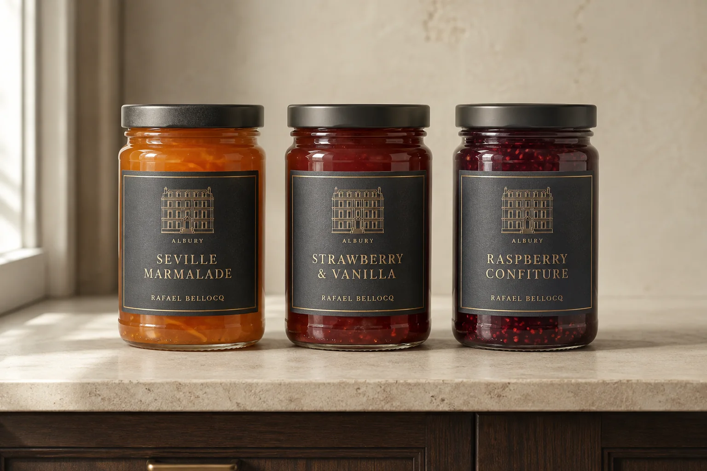
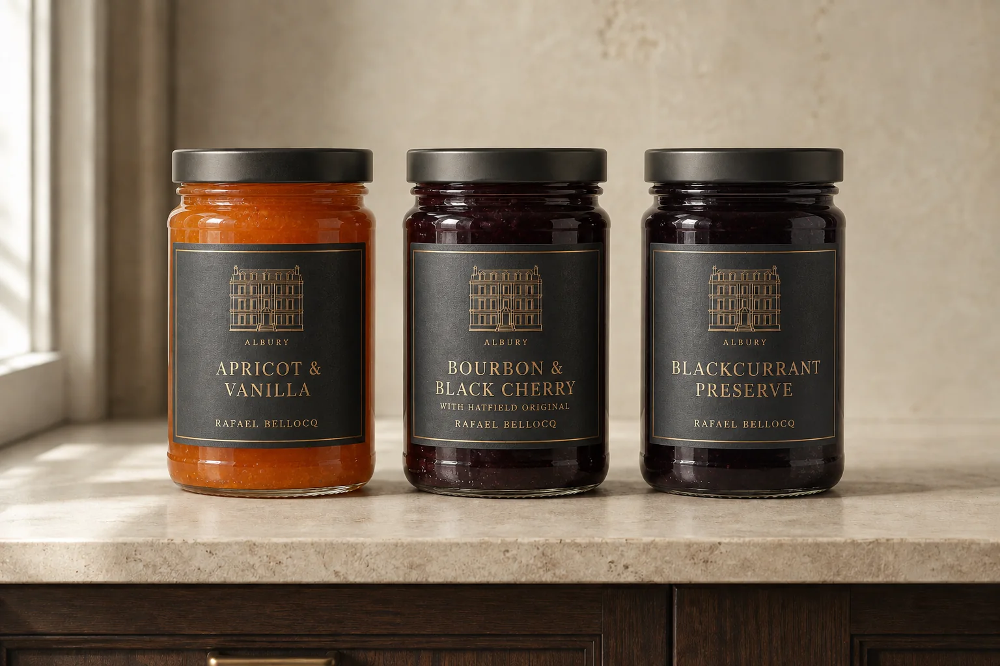
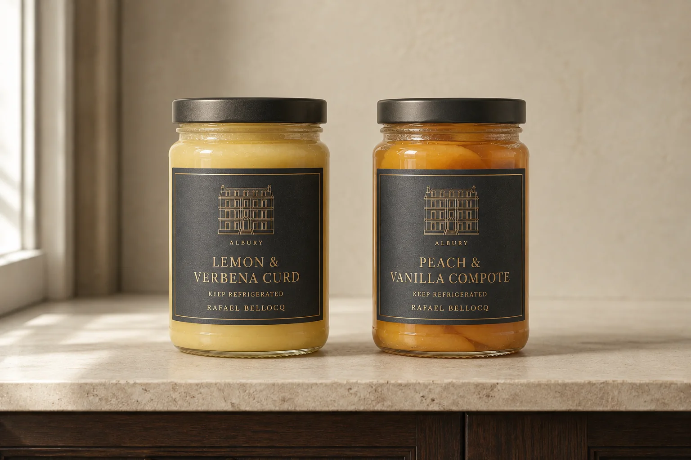
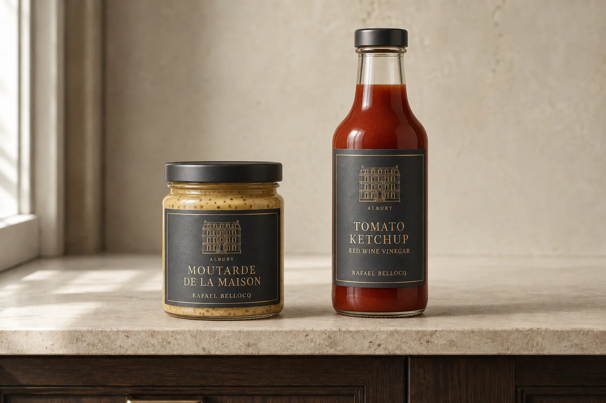
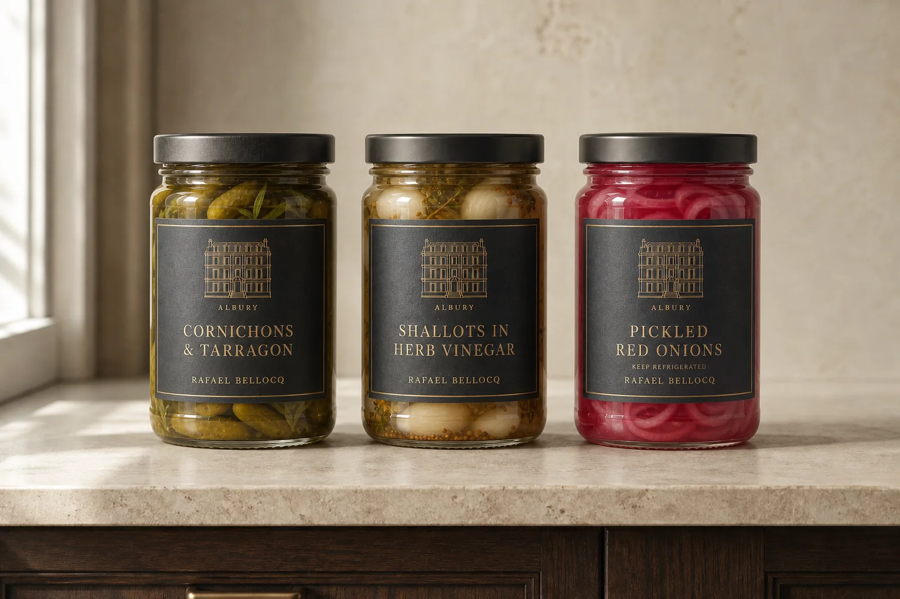
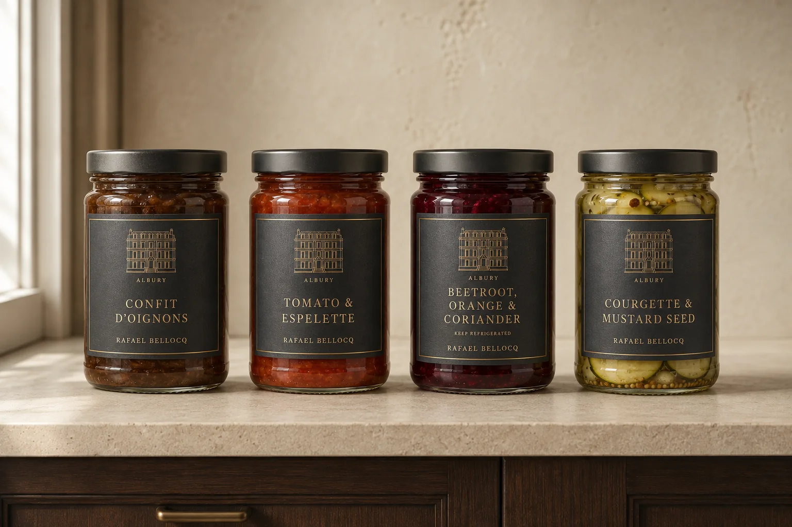
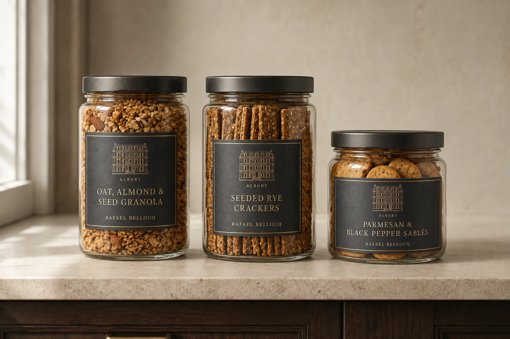
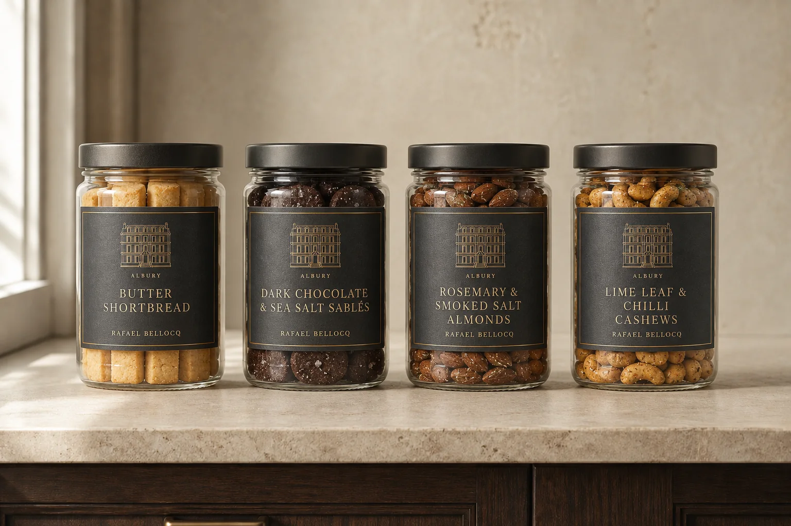
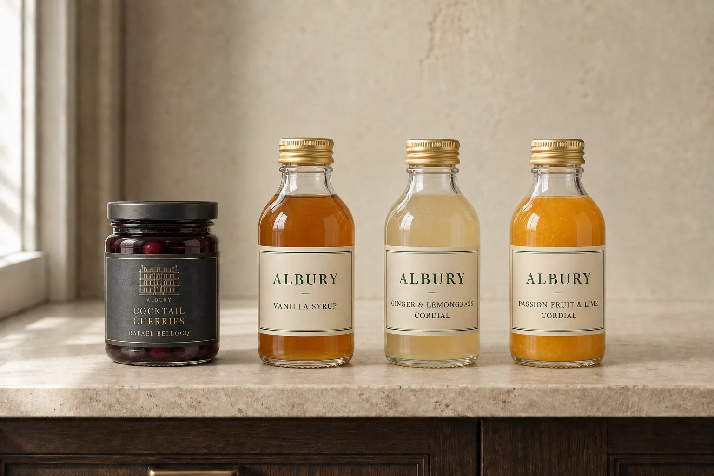
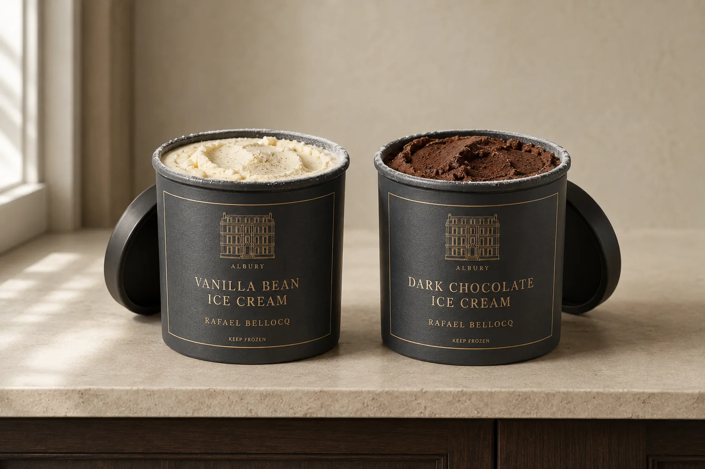
{kind=link}
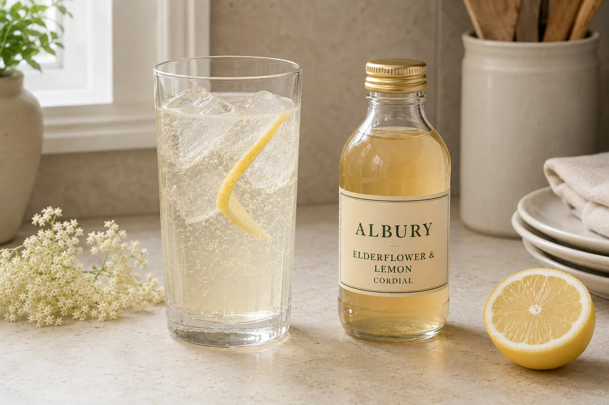
{kind=link}
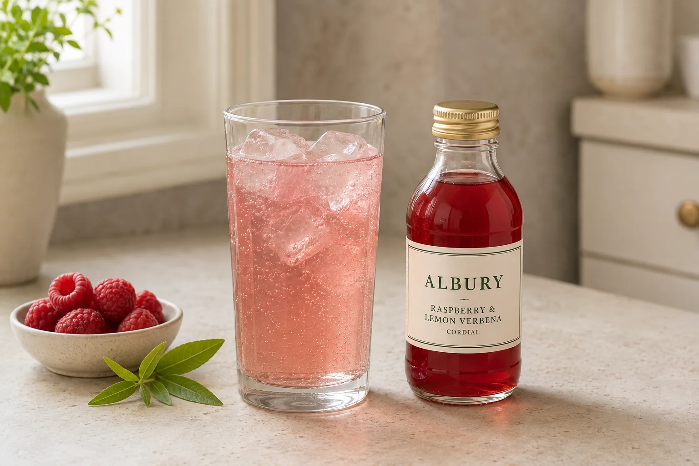
{kind=link}
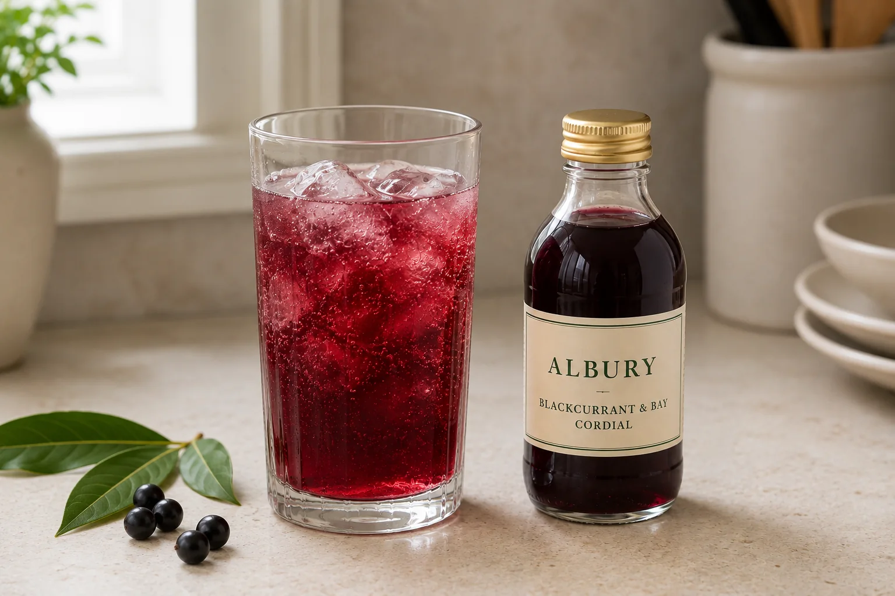
Common Breakfasts
| Dish | Typical service |
|---|---|
| Soft scrambled eggs with chives | Toasted sourdough, roast tomatoes; smoked salmon available as an addition |
| Poached eggs and wilted spinach | Toast, mushrooms and a substantial plate for someone returning from training |
| Omelette | Fine herbs, cheese or mushrooms; salad or toast according to appetite |
| Proper cooked breakfast | Eggs, bacon, sausage, mushrooms and tomatoes, with house ketchup or mustard as wanted |
| Yoghurt, granola and fruit | P18 granola, fresh berries, P08 peach compote or another seasonal fruit preparation |
| Porridge | Fruit, honey and toasted seeds served separately |
| Ricotta pancakes | Summer berries or peach compote; lemon and yoghurt |
| Toast, bread and breakfast baking | Sourdough, brioche, croissants or pains au chocolat; butter and a changing selection of house preserves |
Coffee and tea follow the person rather than a compulsory ceremony. Alex normally has a double espresso after breakfast. Guests can eat later without the kitchen reproducing the full spread for every arrival.
Common Lunches
| Dish | Typical service |
|---|---|
| Roast-chicken and tarragon salad | New potatoes, crisp leaves and mustard dressing |
| Tuna Niçoise | Eggs, green beans, tomatoes, olives and new potatoes |
| Tomatoes, burrata and basil | Good bread; white beans or grilled vegetables can make a fuller vegetarian plate |
| Courgette, pea and ricotta tart | Leaf salad and a seasonal pickle |
| Chilled tomato soup | Basil, good olive oil and bread; a small grilled-cheese sandwich when wanted |
| Crab and lemon linguine | Parsley, chilli and a green salad |
| Tomato and basil pasta | Parmesan offered separately; a regular straightforward lunch |
| Grilled fish | New potatoes or rice, vegetables and lemon-herb dressing |
| Chicken club sandwich | Bacon, tomato and lettuce; crisps or chips and house pickles |
| Mushroom and Comté toastie | Mustard, dressed leaves and cornichons |
| Cold lunch table | Chicken, smoked fish or charcuterie, vegetables, bread, cheese and selected pantry accompaniments |
Common Suppers
| Dish | Typical service |
|---|---|
| Roast chicken with lemon and thyme | Roast potatoes, seasonal greens and pan juices |
| Steak frites | Green salad, peppercorn sauce or Béarnaise |
| Grilled lamb cutlets | White beans, tomatoes and rosemary |
| Hake with brown butter and capers | Crushed potatoes and green beans |
| Miso-glazed salmon | Rice, cucumber and sesame greens |
| Chicken with ginger and spring onion | Rice and stir-fried vegetables |
| Chicken shawarma plates | Flatbreads, yoghurt, chopped salad and pickled red onions |
| Fish tacos | Slaw, lime, salsa and pickled red onions |
| Tagliatelle with ragù | Parmesan and a green salad |
| Roast-aubergine and tomato pasta | Basil, with ricotta or Parmesan offered separately |
| Pea and broad-bean risotto | Lemon, herbs and seasonal vegetables |
| Courgette and ricotta involtini | Tomato sauce and bread |
| Vegetable and chickpea curry | Rice, yoghurt, herbs and a fresh salad |
| Beef burger or a grilled mushroom alternative | Proper bun, onions, house ketchup, mustard and chips |
French sauces and regional cooking remain natural strengths. Cassoulet, duck with lentils, braised beef, fish pie, roast squash dishes and more substantial soups belong to the cooler-season rotation rather than being forced onto every August menu.
Desserts, Baking And Coffee
Common August desserts include lemon tart, raspberry tartlets, apricot frangipane tart, peach-and-raspberry pavlova, chocolate mousse, vanilla panna cotta with berries, roast peaches with vanilla ice cream, affogato and bowls of the two house ice creams. Seasonal fruit and cheese are ordinary alternatives.
Bethan's regular baking repertoire includes sourdough, seeded loaves, brioche, focaccia, croissants, pains au chocolat, madeleines, financiers, lemon cake, chocolate brownies, butter shortbread and chocolate sablés. The menu need not imply every bread and pastry is simultaneously produced in-house every day; specialist bought-in supply and planned production support rotas and demand.
{kind=link}
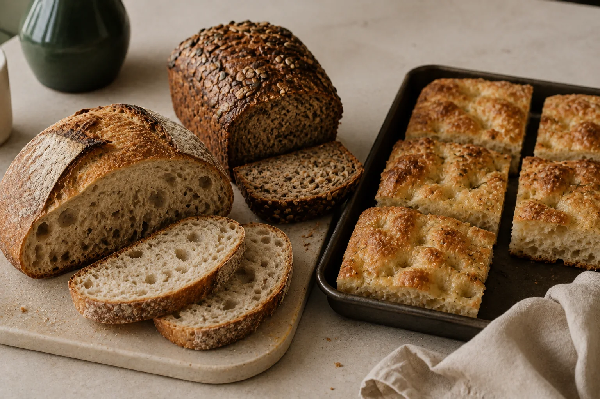
{kind=link}
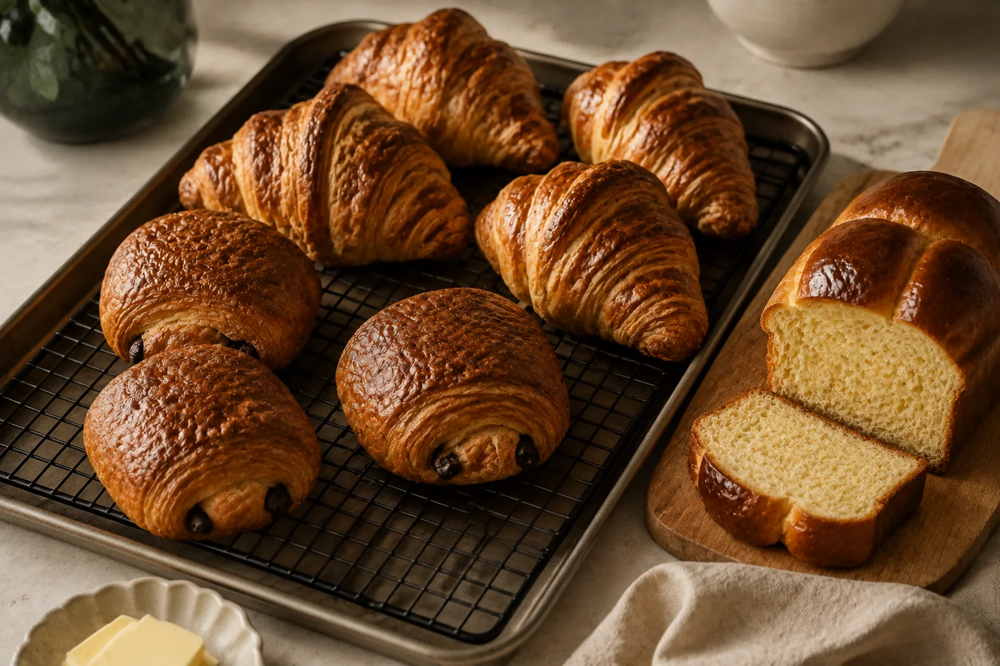
{kind=link}
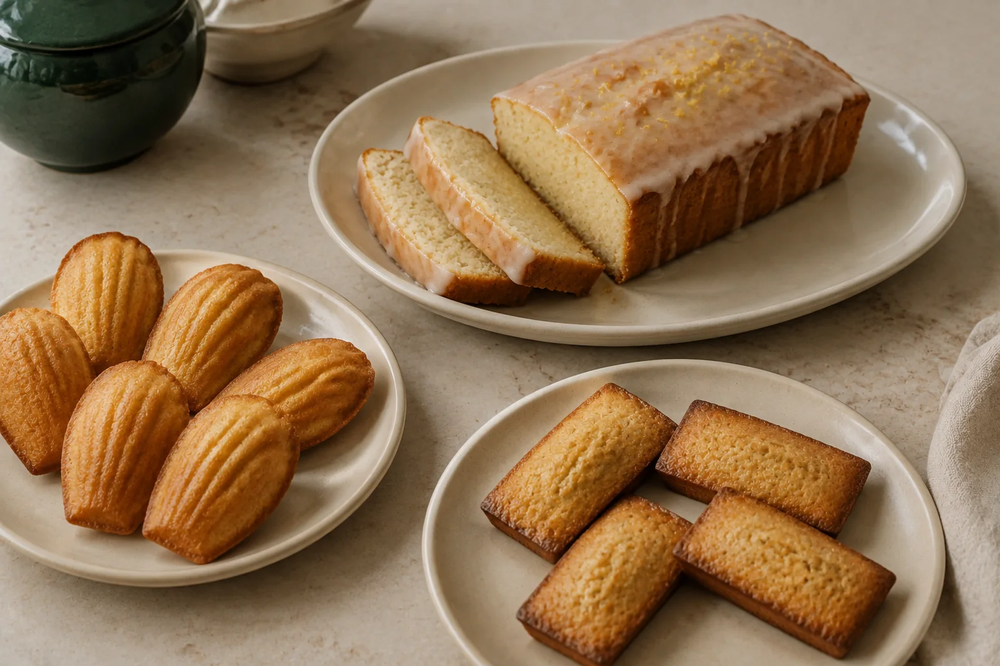
Afternoon coffee or tea might bring one cake and a plate of biscuits. A composed tea for guests might add finger sandwiches, warm scones and a small pastry selection. Neither requires silver-service theatre in an ordinary scene.
Drinks, Studio Food And Late Suppers
| Situation | Useful choices |
|---|---|
| Drinks before dinner | Parmesan sablés, warm gougères, olives, spiced nuts, smoked-fish tartlets or a few croquettes |
| A longer drinks gathering | Seasonal tartlets, crab toast, chicken skewers, mushroom arancini and one substantial tray item |
| Studio meal break | Club sandwiches, toasties, chicken-and-rice bowls, substantial salads or pasta served in the rec room |
| Late return | Omelette, cheese toastie, soup and bread, pasta, a prepared rice bowl or chicken sandwich |
| Friends staying up | Brownies, biscuits, ice cream, fruit, crisps and replenished cold drinks |
| Alcohol-free drinks | Limestone Springs Cream Soda and other stocked producer drinks; house cordials with still or sparkling water: ginger and lemongrass, passion-fruit and lime, elderflower and lemon, raspberry and lemon verbena, or blackcurrant and bay; seasonal selection confirmed by the team |
| Bar preparation | House cocktail cherries and syrups where useful; fresh citrus and appropriate garnishes prepared to demand |
Late service uses the rota and prepared food. Rafael is not awakened to make every sandwich. Alex may make cocktails for friends; this does not make him capable of cooking their supper.
Staff Meals
The staff meal is planned alongside house production and scaled to those on duty. Typical choices include roast chicken with potatoes and vegetables; lentil and vegetable stew with bread; baked pasta with salad; chicken and chickpea curry with rice; fish pie and peas; or vegetable frittata with potatoes and salad. Vegetarian and other required alternatives are planned with the people concerned. Later shifts receive suitable provision, not a plate left indefinitely from lunch.
Ready-To-Use Sample Menus
The following menus are usable examples. Their titles do not create a dated event or a mandatory sequence of meals.
Summer House Day
- Breakfast: scrambled eggs and chives on sourdough; tomatoes; yoghurt, house granola and peach compote; coffee or tea.
- Lunch: roast-chicken and tarragon salad, new potatoes and warm bread; summer fruit.
- Dinner: hake with brown butter and capers, crushed potatoes and green beans; lemon tart with raspberries.
- Later, if wanted: a cheese toastie or vanilla ice cream; appropriate late-shift provision is already arranged.
Terrace Lunch For Eight
- Tomatoes, burrata and basil; focaccia.
- Lemon-and-thyme chicken, new potatoes and grilled courgettes, served to share.
- White-bean and roast-pepper salad as a substantial plant-based dish.
- Apricot frangipane tart and vanilla ice cream.
- Still/sparkling water, Limestone Springs drinks and wine where wanted; coffee afterwards.
Dining-Room Dinner For Ten
- With drinks: warm gougères and smoked-fish tartlets.
- Starter: crab, cucumber and dill; a composed tomato-and-herb alternative as required.
- Main: roast lamb with rosemary jus, potato gratin and summer vegetables; aubergine and white beans as the vegetarian main.
- Dessert: raspberry tartlet and vanilla ice cream.
- Optional cheese, then coffee and petits fours.
Informal Studio Evening
- Chicken shawarma plates, warm flatbreads, chopped salad, yoghurt and pickled onions.
- Roast aubergine and chickpeas as an alternative.
- Chocolate brownies, fruit and cold drinks.
- Served in the rec room during a break; drinks snacks can remain available without turning the tracking room into a dining space.
Summer Drinks Party For Forty
- On arrival: spiced nuts, olives and Parmesan sablés.
- Circulating food: crab toast, tomato tartlets, chicken skewers, mushroom arancini and cheese croquettes.
- Later: small steak-frites portions and roast-aubergine flatbreads.
- Sweet finish: raspberry tartlets and chocolate petits fours.
- Service and preparation are planned with additional support where required; this is not forty guests fed by one cook while the normal household carries on unaided.
Garden Dinner For One Hundred
- Drinks and canapés on the terrace.
- Starter: tomato, basil and burrata, with an appropriate alternative for dairy-free guests.
- Main: roast chicken with tarragon sauce, new potatoes and summer vegetables; roasted vegetable and white-bean main as the planned alternative.
- Dessert: lemon tart with raspberries.
- Coffee and small biscuits.
- A contracted event team supports production, service and clearing. The existing ballasted marquee plan supplies the dinner setting; this sample does not establish an event booking or change Albury's capacity.
Leaving After A Stay
A guest might be offered a jar they enjoyed at breakfast, a box of shortbread or a slice of cake packed for the journey. An early departure can have a breakfast bag: a pastry or sandwich, fruit and a drink. A more deliberate food gift can combine two preserves with biscuits or include mustard and pickles for someone who enjoyed the savoury table. Selection responds to the guest and travel arrangements rather than automatically issuing the entire range.
What Is Not Fixed
There is no obligatory printed daily menu, restaurant-style ordering system, meal subscription, guest charge or public restaurant at opening. These dishes do not create Alex's favourite cuisine, a chef he learned from, a remembered dinner, a dietary diagnosis or a future booking. Use the repertoire to keep food specific and scenes moving.
Guest food gifts and the overnight arrival hamper follow ALBURY_GUEST_HOSPITALITY.md. The arrival basket includes Limestone Springs still and sparkling water, dry treats, fruit and a guest stationery pack; the basket stays with the room. A separately prepared take-home food hamper is a gift including its basket.
The culinary programme & opening pantry
Authority And Opening Position
This file owns Albury's culinary programme, pantry repertoire, production calendar, provisioning and the commercial status of its food and household lines. ALBURY_MENUS_AND_COMMON_FOODS.md owns common dishes and usable sample menus. STAFF_RAFAEL_BELLOCQ.md owns Rafael's career and kitchen authority; PROPERTY_ALBURY_STAFFING.md owns staff, reporting and rotas. These files replace the missing PROPERTY_ALBURY_HOUSE_STANDARD.md as sources for culinary detail and supersede older image captions and restrictive pantry lists.
The baseline is Monday 11 August 2025. Rafael joined the project in January 2025, contracted to Knight Frank until the 1 July handover, when he became an AW Holdings employee. January is now fixed for Rafael specifically; other department heads retain their January/February recruitment window.
Rafael had months to develop menus, specifications, suppliers, recipes and seasonal stock before Alex returned. Pre-handover recipe work and seasonal production used Knight Frank-arranged professional kitchen access, with appropriate storage and transfer to Albury. No particular external venue or supplier is named. This does not place Rafael in an operational finished Albury kitchen in January or backdate the entire brigade's arrival. Since July, the kitchen has fed staff on duty, completed service rehearsals and maintained the pantry while Alex was away. The programme is established at opening; it is not waiting for Alex to design it.
Culinary Character
Albury is a home organised for daily pleasure, staying friends, music and frequent entertaining. The cooking is generous, precise and adaptable. Rafael's French formation and Béarnais background provide technique and judgement; his London restaurant and private-house experience bring British produce and an international repertoire. French names are used when they identify a dish naturally, not to rename every British preparation or exclude food Alex would recognise from a global life.
Breakfast after training is substantial. Lunch may be a quick plate, a long table on the terrace or food taken upstairs. Dinners range from roast chicken and pasta with friends to a composed three-course meal. Late studio work needs satisfying food that can be eaten in a break. Cakes, biscuits, ice cream, savoury snacks and good condiments belong to ordinary household generosity.
Alex cannot cook, but he understands food and makes excellent cocktails. His established drinks are a double espresso after breakfast, a flat white when out, and properly brewed Limestone Springs Cream Soda. The dishes below are house repertoire, not newly declared favourite foods, a dietary prescription or evidence of past meals.
People And Service
| Person / team | Programme responsibility |
|---|---|
| Rafael Bellocq | Culinary direction, recipes, menus, suppliers, standards, pantry release and kitchen deployment |
| Élodie Martin | Operational deputy; hot kitchen, preparation schedules, cover and event production |
| Tolly Venn | Chef de Partie and qualified second cook; sections, relief cooking and continuing preserve/sauce work under Rafael |
| Bethan Pritchard | Bread, breakfast baking, pastry, biscuits, ice creams and pantry production; contributes to ordinary cooking and staff meals |
| Dean Wilkes; Gareth Palmer; Lewis Donnelly | Receiving, stores, washing, equipment and kitchen support; Gareth and Lewis also cover assigned house-service shifts without double booking |
| Crispin Vale and Harjit Sethi | Dining and drinks service, guest-facing readiness and bar deployment; agree food accompaniments and bar preparations with Rafael |
| Ottilie, Kit and Louise | Guest numbers, household scheduling, event support and contractor coordination |
Breakfast and evening cooking are covered through staggered shifts, prepared components and relief cooks. Neither Rafael nor Bethan works every service. The kitchen provides one proper shared meal for staff on duty, with suitable provision for later shifts; it does not cook 36 additional dinners irrespective of attendance. Staff food is planned and worthwhile, not dependent on guest leftovers.
The raised-ground production kitchen supplies daily life and smaller dinners; the upper-basement event kitchen supplies overflow, assembly and larger events. Food reaches guest floors and Studio Albury through the service route. No new cooking room is added to the studio floor. Food and drinks stay in appropriate hospitality areas, away from recording equipment and instruments.
Larger occasions draw on the established Rhubarb Events and other contracted staffing relationships. A menu's presence here does not book a party or put one brigade on duty for every service. The specific outside-catering conditions effective from 19 August in Rafael's file remain later-state material.
Opening House Preparation Register — 33 Items
This is the standing opening repertoire, stocked or replenished for service. It includes preserved goods, chilled preparations, dry pantry food and frozen desserts. It is not thirty-three shelf-stable jars, nor a claim that every fresh item is made every morning. Quantities follow actual occupancy and service demand. Nothing in this register fixes a preservation method or shelf life.
| ID | Preparation | Production / opening availability | Where it earns its place |
|---|---|---|---|
| P01 | Seville bitter-orange marmalade | January production; retained approved reserve at opening | Breakfast, toast and selected gifts |
| P02 | Strawberry and vanilla confiture | Summer batch in opening stock | Breakfast, yoghurt and pastry |
| P03 | Raspberry confiture | Summer batch in opening stock | Breakfast, cakes and afternoon tea |
| P04 | Apricot and vanilla preserve | Summer batch in opening stock | Breakfast and pastry glazing |
| P05 | Bourbon and black cherry confiture | Standing recipe; summer reserve, replenished from suitable fruit supply | Cheese, breakfast and gifts; Hatfield bourbon remains credited as an ingredient |
| P06 | Blackcurrant preserve | Summer batch in opening stock | Toast, yoghurt and cake filling |
| P07 | Lemon and verbena curd | Fresh chilled batches, replenished to demand | Breakfast, tartlets and sponge cakes |
| P08 | Peach and vanilla compote | Fresh chilled summer preparation | Yoghurt, pancakes and desserts |
| P09 | Moutarde de la maison | Standing Dijon-led mustard with restrained whole seed | Table condiment, sandwiches and dressings |
| P10 | Albury tomato ketchup | Standing tomato and red-wine-vinegar recipe | Breakfast, burgers, croquettes and late suppers |
| P11 | Cornichons with tarragon | Summer production and replenished stock | Sandwiches, charcuterie and drinks snacks |
| P12 | Shallots in thyme-and-tarragon vinegar | Standing preparation, replenished as needed | Cheese, cold meats and salads |
| P13 | Confit d'oignons | Regular production to demand | Cheese, pâté, sandwiches and savoury pastry |
| P14 | Tomato and Espelette confit | Summer production; held appropriately for its preparation | Eggs, grilled fish, vegetables and tartines |
| P15 | Quick-pickled red onions | Fresh chilled batches | Tacos, grilled meats, salads and sandwiches |
| P16 | Beetroot with orange and coriander | Chilled pickled vegetable preparation | Lunch salads, smoked fish and cold tables |
| P17 | Courgette and mustard-seed pickle | Summer vegetable preparation | Sandwiches, cheese and picnic food |
| P18 | Toasted oat, almond and seed granola | Regular small dry batches | Breakfast and guest-pantry breakfast provision |
| P19 | Seeded rye crackers | Regular baking | Cheese, pâté and savoury snacks |
| P20 | Parmesan and black-pepper sablés | Regular baking | Drinks, studio breaks and small gifts |
| P21 | Butter shortbread | Regular baking | Coffee, bedrooms on arrival and take-home food |
| P22 | Dark chocolate and sea-salt sablés | Regular baking | Coffee, late evenings and take-home food |
| P23 | Rosemary and smoked-salt almonds | Regular small batches | Bar and rec-room service |
| P24 | Lime-leaf and chilli cashews | Regular small batches | Bar and informal gatherings |
| P25 | Cocktail cherries | Summer fruit preparation and replenished stock | Bar garnish; separate from black-cherry confiture |
| P26 | Vanilla syrup | Regular bar preparation | Mixed drinks, milkshakes and desserts |
| P27 | Ginger and lemongrass cordial | Regular chilled preparation | Alcohol-free drinks and cocktail components |
| P28 | Passion-fruit and lime cordial | Regular chilled preparation | Alcohol-free drinks and cocktail components |
| P29 | Vanilla-bean ice cream | Regular frozen production | Affogato, fruit, tarts and late-night bowls |
| P30 | Dark-chocolate ice cream | Regular frozen production | Desserts and informal late-night service |
| P31 | Elderflower and lemon cordial | Early-summer recipe and retained approved reserve; replenished for service | Floral, light afternoon drinks and sparkling-water service |
| P32 | Raspberry and lemon verbena cordial | Regular chilled summer batches | Fragrant berry drinks, terrace lunches and alcohol-free aperitifs |
| P33 | Blackcurrant and bay cordial | Summer fruit recipe; regular chilled service batches | Deeper fruit drinks alongside food and bar service |
Fresh bread, viennoiserie, sauces, stocks, dressings, pâtés and the wider cooking mise en place are additional kitchen work, not omitted simply because they are not numbered products. House recipes and excellent bought-in products coexist. Rafael does not make every ingredient from scratch for the sake of a label.
House Cordial Programme
Five core cordials are established at opening: ginger and lemongrass (P27), passion-fruit and lime (P28), elderflower and lemon (P31), raspberry and lemon verbena (P32), and blackcurrant and bay (P33). Vanilla syrup (P26) is a separate bar preparation, not a sixth cordial. P01–P30 retain their existing IDs; the approved expansion brings the opening register to thirty-three preparations.
These are established recipes and planned service provision, not five compulsory daily production runs. Rafael sets the recipes and releases batches; Bethan and the kitchen team schedule production, and Crispin and Harjit agree the selection for service. Rotate small chilled working batches with demand and approved seasonal reserve. Confirm the current selection with the team; the website is a repertoire, not a live stock feed. Summer ingredients and retained early-summer preparations come through suppliers and the established pre-handover kitchen arrangements, not an imaginary harvest at The Cedars.
| Core cordial | Character and common serve |
| Ginger and lemongrass | Bright and warming; chilled with still or sparkling water and ice |
| Passion-fruit and lime | Sharp tropical fruit; sparkling water and ice |
| Elderflower and lemon | Light and floral; sparkling water, ice and a slim lemon peel |
| Raspberry and lemon verbena | Fragrant summer berries; sparkling water and ice |
| Blackcurrant and bay | Deep fruit with a restrained herbal finish; chilled still or sparkling water alongside food |
A seasonal slot rotates rhubarb and orange in spring and blackberry and apple in autumn. Both are adopted annual recipes, shown as seasonal repertoire rather than extra standing opening products or guaranteed stock on 11 August. They do not receive P34/P35 opening IDs. Rhubarb and orange belongs to the spring development programme; blackberry and apple belongs to autumn production. Their photographs illustrate the recipes and packaging, not a dated batch or an invented prior harvest.
All five core cordials and both seasonal recipes use the same short clear, gold-capped Albury bottle with an ivory label, green rules and bottle-green serif wordmark. Flavour and the word cordial identify the contents. All cordials are kept chilled and diluted to taste. Batch, storage, allergen and use-by details follow the kitchen's working procedures; no shelf life or bottle volume is established here. A selected bottle may accompany a food gift with appropriate handling, rather than being compulsory in every room hamper.
Seasonal Development
| Period | Programme emphasis |
|---|---|
| January–February | Marmalade, citrus trials, core condiment and baking recipes, suppliers and the opening service specification |
| March–May | Rhubarb and ginger compote/preserve, spring curds, herb preparations, early-summer menu development |
| June–August | Strawberry, raspberry, apricot, blackcurrant, cherry and peach; summer pickles, tomatoes, cold lunches and terrace service |
| Late August–September | Damson/plum confiture, fig and bay, pear and ginger, apple preparations and autumn entertaining |
| October–November | Pâte de coing, apple-and-crabapple jelly, pear compote, mushroom preparations and winter menu trials |
| December | Mincemeat, spiced biscuits, candied citrus, chocolate work and seasonal gifts |
Damson/plum confiture, fig and bay, and pâte de coing are established recipes in the annual programme but not opening Albury-produced stock on 11 August. Their superseded photographs are archived as annual-repertoire references; the live pantry gallery shows the thirty-three opening preparations. Do not invent a 2024 Albury batch to fill an autumn shelf. Seasonal production and serving availability are separate: properly retained winter or summer stock can remain in use after its harvest month.
Brown sauce, redcurrant jelly, mushroom ketchup, piccalilli and pickled walnuts are not prohibited by Rafael's nationality. They may enter menu work or a later approved rotation. They are not silently added to the fixed opening thirty-three. The register is a reliable baseline, not a rule requiring Ryan's approval for every ordinary meal or temporary kitchen preparation.
Stock, Formats And Presentation
Production planning separates daily service, seasonal reserve and guest gifting. Élodie coordinates working quantities; Bethan schedules pastry and preserving; Dean and the stewards support receiving and stock rotation. Expected guests, staff on duty and events determine par levels. Quiet weeks are useful for seasonal work, leave and servicing rather than uncontrolled production.
Kitchen storage identifies contents, preparation/batch date, allergens, required storage and use-by information according to the kitchen's actual procedures. The decorative front label is not the whole working label. Do not supply invented shelf lives or assume a sealed jar is ambient-safe. Staff confirm guest dietary requirements; no dish becomes a medical recommendation or an invented personal allergy.
| Format | Use |
|---|---|
| Back-of-house containers | Working quantities and seasonal reserve, with practical labels |
| Table dishes, ramekins, jugs and cruets | Portions for breakfast, cheese, sauces and drinks; bulk stock stays in the kitchen |
| Guest-pantry provision | A small replenished selection appropriate to the space; chilled items remain chilled and are supplied through service |
| Take-home jars, bottles and food boxes | Selected for the guest and occasion; necessary handling information accompanies food |
Albury has two deliberate food-packaging expressions. Pantry jars and food preparations retain the charcoal and muted-gold front label, architectural house mark and Rafael Bellocq's name. This includes P25 cocktail cherries, which remains a jar in the pantry family.
All house syrups and cordials use the Albury drinks label and bottle family. At opening this means P26 vanilla syrup and the five core cordials P27, P28 and P31–P33. Their guest-facing bottle is short, cylindrical clear glass with rounded shoulders, a short neck and a gold-coloured metal screw cap, following the existing ginger-and-lemongrass cordial reference. The front label is warm ivory, with bottle-green serif ALBURY, a clear flavour/product name and restrained fine green rules. There is no chef's name and no architectural house mark on this front label. Syrup and cordial are named accurately; flavour is not a separate sub-brand. The same design applies in the pantry, at the bar and in guest gifts, irrespective of a hamper's colour expression.
The drinks label is a deliberate house-name expression, not an incomplete pantry label. Rafael retains culinary authority; a different front label does not transfer the recipes or create another company. Future house syrups and cordials use this family if developed, without silently enlarging the fixed thirty-three-item opening register. Ketchup and other bottled food condiments remain in the pantry family; a bottle alone does not make something a cordial.
Practical rear/base or working labels still identify the preparation, batch/date, allergens, required storage and use-by information. All five core cordials and the seasonal cordials remain refrigerated. Presentation does not establish bottle capacity, preservation method or shelf life. The kitchen need not translate every label into French.
Limestone Springs Cream Soda, waters and mixers retain their own identity and producer packaging. Purchased cheese, charcuterie, honey, chocolate, specialist bread or other goods are credited honestly. A house serving vessel does not turn another producer's food into an Albury-manufactured product. The Cedars kitchen garden is future work, so opening produce comes from suppliers, not imaginary harvests next door.
Ketchup, mustard and other savoury preparations can be included in a thoughtful food gift where useful. The old absolute exclusion from departure gifts is removed. There is no automatic requirement that every visitor leaves with the same jar or a complete pantry set. ALBURY_GUEST_HOSPITALITY.md now owns arrival hampers, the guest/house ownership distinction, stationery packs and selected take-home gifts. Its flexible hospitality provision replaces fixed departure tiers; this file continues to own recipes, stock and food handling.
Sales And Future Development
There is no permanent prohibition on selling Albury food or household goods. The former never-sell/private-only rule is retired for both the culinary and house lines.
At story opening, these remain household commissions and production used for Alex, staff, guests and gifts. There is no established shop, public ordering, retail price list, commercial customer base, launch, distributor, revenue or committed product business. This opening fact does not prevent Alex from considering a sale, limited release, collaboration, wholesale arrangement or a later independent business in play.
A future proposal can choose a small selection rather than commercialising every household object. Rafael would contribute culinary judgement and recipe development; any production arrangement must leave the household properly served. The exact recipe/design rights, maker agreements, operator, production site, sales channel, prices and economics would be decided as part of that proposal, not invented as completed backstory. Existing AW business, finance, rights and commercial teams remain the route; no new company or management role is created here.
Household staff are not automatically a retail workforce. A future sale does not itself open Albury's rooms to the public, grant access to its private studio, involve Homer or Rosie, transfer another producer's identity, or create paid posting on Alex's social accounts. Existing commercial and public-knowledge rules still apply to an actual proposal.
Retrieval For Play
Use ALBURY_MENUS_AND_COMMON_FOODS.md when a scene needs a meal. Choose a coherent small selection for the people, season and time available; do not recite the pantry register or turn a casual request into a planning meeting. The examples are available repertoire, not historic meals, fixed favourites or future diary commitments.